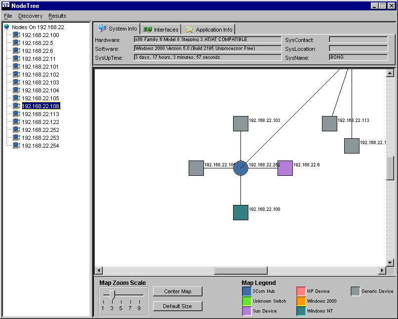

Network Topology Monitor:
The Network Topology Monitor (NTM) is a software system that is installed on a single host computer on an IPv4, Class C network. The system, developed in Java, communicates with network nodes using the Simple Network Management Protocol (SNMP) to obtain information for each device. A listing of the discovered nodes and their respective information are displayed to the user. This information, in combination with a network topology map, aid in the management of the network.
